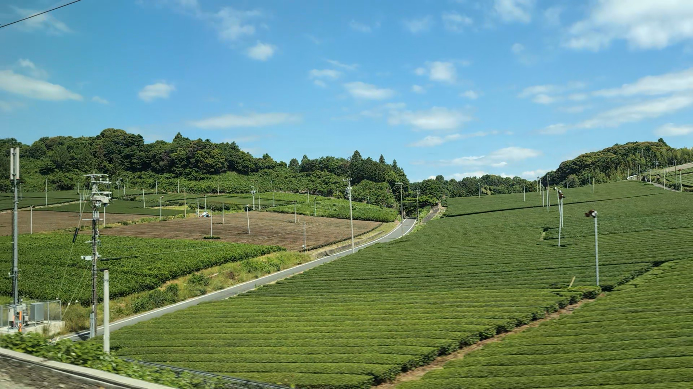
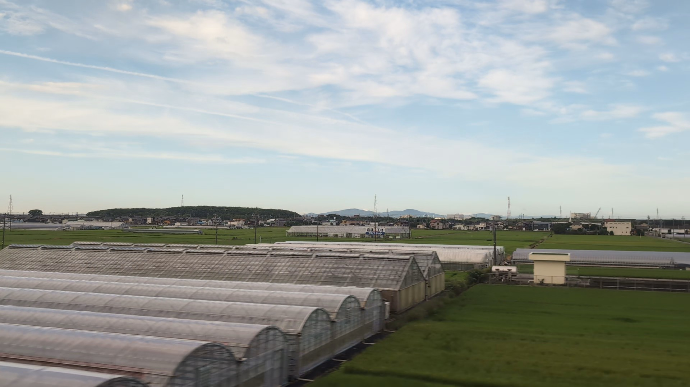

車窓で見つける4つの風景
人の営みがつくる風景。
東京から京都、大阪へ。建物が続く景色の合間に、田畑が広がります。水田、畑、茶畑、温室。それぞれに作物を育てる人の営みが見えてきます。
01 · 水田
同じ田んぼも、姿を変える。
水を張った田んぼは、小さな鏡のように空を映します。植えたばかりの稲が描く細い緑の列は、やがて田んぼを覆う緑へ。実りとともに黄金色へ近づき、収穫後には刈り株や土が見えるようになります。
田んぼの水は、稲の生育や雑草の管理に役立ちます。ただし、いつも水を張っているわけではありません。栽培の途中や収穫に向けて水を抜くこともあり、乾いて見える区画も稲作の風景の一部です。
田んぼの変化を示す一例です。月ごとの予測ではなく、時期は地域や天候、栽培方法によって変わります。
冒頭の写真は、滋賀県の三上山、別名「近江富士」の麓に広がる水田です。山だけでなく手前にも目を向けると、道や低いあぜが田んぼを小さな区画に分けています。
三上山と田んぼを眺める02 · 畑
作物より先に、模様を探す。
まっすぐな列の間に土が見える畑もあれば、緑や茶色の面に見える畑もあります。野菜などさまざまな作物が育ちますが、走る列車から種類まで見分けられるとは限りません。
細い道、用水路、低い土の盛り上がり。区画の間にあるものにも注目してみましょう。田んぼを囲む土の縁「 あぜ 」には、水を保つ役割があります。なお、区画の境目だけでは、どこまでが同じ農家の田畑なのかは分かりません。
線路の近くから、遠くの丘へ。同じ車窓に、いくつの模様が見つかるでしょうか。
03 · 茶畑
静岡に広がる緑の波。

丸く刈りそろえられた茶の木が、地形に沿って緑の波を描きます。静岡は日本の茶産地の一つ。写真では、掛川付近の斜面に茶の木の列が続いています。
茶畑の上に立つ、ファンの付いた細い柱も探してみてください。上空の暖かい空気を茶の木へ送る防霜ファンです。霜から茶を守る設備も、この緑の丘を支えています。
お弁当に添えるペットボトルのお茶、宿で飲む一杯、窓の外の茶畑。身近な飲み物から、車窓の風景へ思いを巡らせるのも旅の楽しみです。
04 · 温室
銀色の屋根の下の農業。

田畑の間に、白く長い屋根が現れます。丸いトンネル形もあれば、屋根の頂点がとがったものも。フィルムで覆った温室は、一般に「 ビニールハウス 」と呼ばれます。
屋根や壁の覆いは、作物を育てる環境の管理に役立ちます。温室で育つのは野菜や果物、花など。ただし、屋根だけで中の作物は分かりません。「何を育てているのかな」と想像する入口にしてみてください。
豊川放水路付近で撮ったこの写真には、線路に近い丸屋根と、その奥のとがった屋根が写っています。蒲郡周辺では、山裾に温室が並ぶ風景も見られます。
温室のある風景をもっと見る →旅のあとにも残る発見
車窓に続く、いつもの暮らし。
お弁当を開いたときに田んぼを、お茶を飲んだときに茶畑を思い出すかもしれません。写真の田畑が、その食事の産地だと分かるわけではありません。それでも、食べ物や風景を見る目に、小さな発見が加わります。
いま読み物として楽しんでも、次の旅に向けて座席の左右や見どころを調べても。自分のペースで車窓を楽しんでください。
参考資料と写真について
参考資料は2026年10月10日に確認しました。眺め方の提案は編集上のものです。遠景の写真から、個々の区画の作物を特定したものではありません。
写真は列車から撮影した実際の風景です。撮影場所と日付は各写真の下に記載しています。